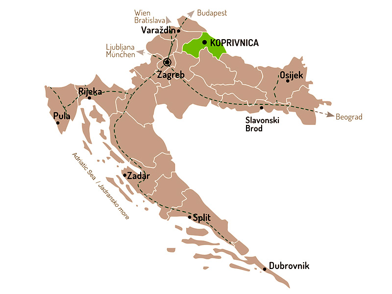
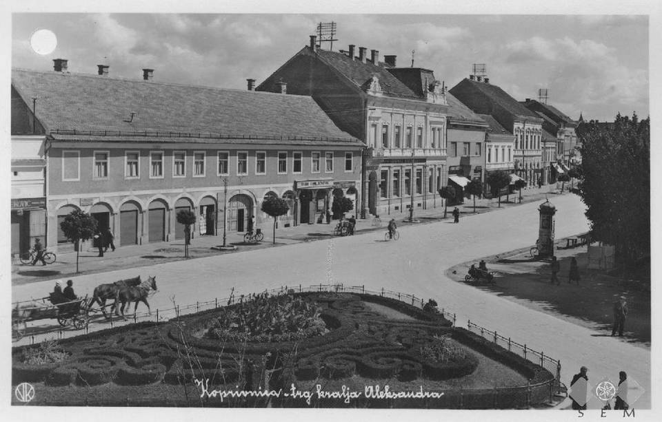
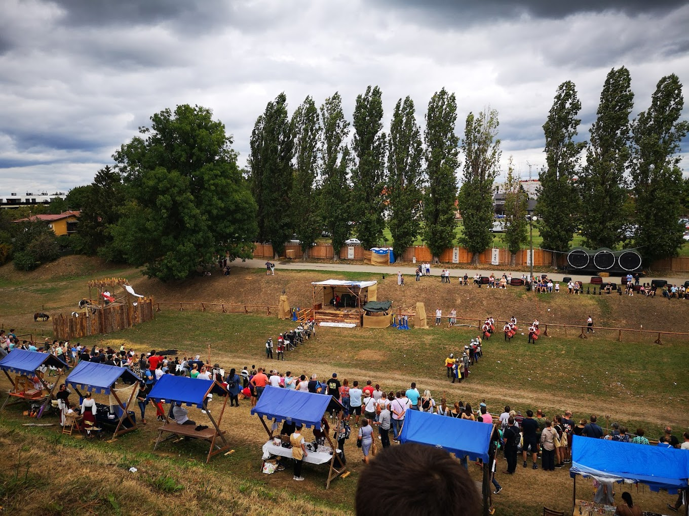

O Koprivnici
Koprivnica, smještena u sjevernom dijelu Hrvatske, u Koprivničko-križevačkoj županiji, ističe se svojom bogatom poviješću, kulturnom baštinom i prirodnim ljepotama. Geografski smještena uz rijeku Dravu, ovaj grad nudi brojne mogućnosti za uživanje u prirodi, rekreaciji i kulturnim sadržajima.
Povijest
U srednjem vijeku, Koprivnica je postala značajno trgovačko središte. Godine 1540. dobila je status slobodnog kraljevskog grada, što je dodatno potaknulo njen razvoj. Tijekom 16. i 17. stoljeća, grad je bio izložen napadima Osmanlijskog Carstva, a njegov strateški položaj učinio ga je važnom vojnom točkom. U 19. stoljeću, s razvojem željezničkog prometa, Koprivnica je postala još važnije trgovačko čvorište. Industrijalizacija je donijela nove mogućnosti, a grad je postao poznat po svojim tvornicama i obrtnicima.
Kulturne atrakcije
Jedna od glavnih kulturnih atrakcija Koprivnice je Gradski muzej, koji nudi uvid u bogatu povijest grada kroz izložbe o arheologiji, etnografiji i umjetnosti. Trg slobode, centar gradskog života, okružen je povijesnim zgradama i crkvama, uključujući crkvu sv. Nikole. Tijekom godine, grad domaćin brojnih festivala i događanja, poput Špancirfesta, Dana grada i renesansni festival koji privlače posjetitelje svojim sadržajem i atmosferom.
